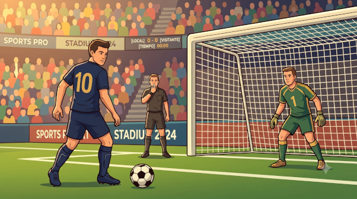
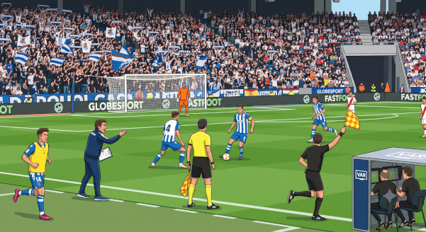
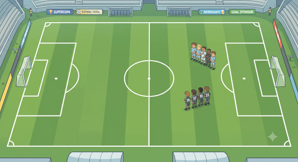
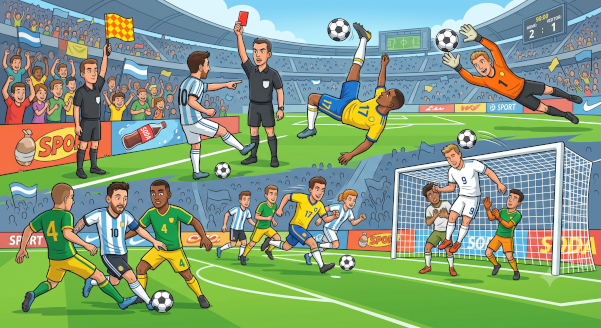

El deporte que todo el planeta entiende, en las palabras de cada región.
Ningún tema del español cambia tanto de una frontera a otra como el fútbol. Cada país bautizó el
juego a su manera, y por eso esta página se lee en dos niveles: primero el término
neutro latinoamericano, el que se entiende en cualquier cancha del continente, y al lado
las variantes regionales con su etiqueta. Lo rioplatense aparece marcado y con
frecuencia — gambeta, arquero, orsái, DT — porque es el
dialecto que más vale reconocer de oído. El audio, en cambio, siempre suena en español neutro.
Velocidad 🔊
Escena 01
El campo y el equipamiento
Lo que se ve antes de que ruede la pelota.

La ilustración de esta escena todavía no está disponible. La leyenda numerada de abajo funciona igual.
1
la pelota el balón
the ball
Pelota es la palabra de todos los días en casi toda Latinoamérica; balón suena algo más formal o periodístico.
El árbitro colocó la pelota en el punto de penal.
The referee placed the ball on the penalty spot.
2
la cancha
the field, the pitch
Españael campo (de juego)
En Latinoamérica se dice cancha sin excepción; campo de juego es neutro y aparece sobre todo en la escritura.
Los jugadores salieron a la cancha entre aplausos.
The players came out onto the pitch to applause.
3
el estadio
the stadium
El recinto entero, con tribunas y todo. La cancha es solamente la superficie de juego que está adentro.
4
la portería el arco
the goal
LatAmel arco
El arco es el término cotidiano en Latinoamérica y en el Río de la Plata; la portería domina en España y en el registro formal.
Mandó la pelota al fondo del arco.
He sent the ball into the back of the net.
5
el poste el palo
the goalpost
Coloq.el palo
Los dos verticales. Palo es lo coloquial y lo que se grita en la tribuna: la pelota dio en el palo.
6
el travesaño
the crossbar
Españael larguero
El horizontal, el que cierra el arco por arriba.
7
los botines
the boots, the cleats
Españalas botas
Méxicolos tacosColoq.
En el Río de la Plata siempre botines, nunca botas.
Se ató los botines antes de entrar al partido.
He tied his boots before going into the match.
8
la camiseta
the jersey, the shirt
Rioplatensela casaca
Méxicola playera
La casaca vive casi solo en la crónica deportiva escrita, no en la charla común.
Lleva la camiseta número diez.
He wears the number ten shirt.
9
el silbato
the whistle
Coloq.el pito
El verbo es pitar: el árbitro pitó falta.
10
los guantes
the (keeper's) gloves
La única pieza del equipamiento que pertenece a un solo puesto: los guantes del arquero.
11
las espinilleras
the shin guards
Rioplatenselas canilleras
De canilla, que en el Río de la Plata es la espinilla.
Escena 02
Las personas
Los puestos, el banco, los jueces y la gente de la tribuna.

La ilustración de esta escena todavía no está disponible. La leyenda numerada de abajo funciona igual.
1
el/la futbolista el jugador / la jugadora
the player
Futbolista nombra la profesión y no cambia de forma según el género; jugador sirve para cualquier deporte.
2
el portero el arquero
the goalkeeper
Españael guardameta
Rioplatenseel golero
Arquero es lo normal en casi toda Latinoamérica; golero es marcadamente uruguayo.
El arquero atajó el penal en el último minuto.
The keeper saved the penalty in the last minute.
3
el defensa / la defensa
the defender
Rioplatenseel defensor
el zagueroPeriodístico
Cuidado con el artículo: la defensa también nombra a toda la línea defensiva como conjunto.
4
el mediocampista
the midfielder
Rioplatenseel volante
Españael centrocampista
Volante es la palabra argentina de uso diario; mediocampista se entiende en todas partes.
El mediocampista central maneja el ritmo del equipo.
The central midfielder controls the team's tempo.
5
el delantero el atacante
the forward, the striker
Rioplatenseel punta
el goleador
El goleador no es un puesto sino una descripción: el que convierte los goles.
6
el suplente
the substitute
El banco (de suplentes) es donde esperan. Entrar es salir a jugar desde ahí.
7
el entrenador el técnico
the coach, the manager
LatAmel director técnico · el DT
Españael místerColoq.
En Argentina el DT se dice tal cual, letra por letra, hasta en la conversación más corriente.
El técnico hizo tres cambios en el segundo tiempo.
The manager made three substitutions in the second half.
8
el árbitro / la árbitra
the referee
Rioplatenseel referíColoq.
el juez
Referí viene del inglés referee y suena informal; en la escritura seria se prefiere árbitro.
9
el árbitro asistente
the assistant referee
el juez de líneaTradicional
Juez de línea —y el más antiguo abanderado— son los nombres viejos. Hoy la designación oficial es árbitro asistente, aunque nadie en la tribuna la use.
10
el hincha el aficionado
the fan, the supporter
Rioplatenseel hincha
EspañaMéxicoel aficionado
el seguidor · el fanático
Hincha no cambia de forma: el hincha y la hincha.
Los hinchas cantaron durante los noventa minutos.
The fans sang for the full ninety minutes.
11
el VAR el videoarbitraje
the video assistant referee
Se usa como sigla masculina y se pronuncia como palabra: el VAR revisó la jugada.
Sin punto en la imagen · el colectivo
el capitán / la capitana
the captain
Lleva la cinta en el brazo y es el único que habla con el árbitro en nombre del equipo.
el equipo
the team
El de club. Para el país entero se usa otra palabra.
la selección (nacional)
the national team
Cada selección tiene su apodo por los colores: la albiceleste es Argentina, la verdeamarela, Brasil.
La selección se entrenó toda la semana a puertas cerradas.
The national team trained all week behind closed doors.
la hinchada
the supporters (as a body)
EspañaMéxicola afición
Rioplatensela barra · la barra brava
Ojo con el registro: la barra brava no es la hinchada en general sino el grupo organizado, y la palabra arrastra connotaciones de violencia.
NOTA*The Rioplatense football lexicon.
Argentina and Uruguay didn't just borrow the sport's vocabulary — they rebuilt a good part of it. This page leads with neutral Latin American terms everywhere, but the Rioplatense set is worth learning as a coherent group, because it is what you will actually hear from a Buenos Aires teacher, a Buenos Aires broadcast, or a Buenos Aires bar:
la gambeta — the dribble, from gamba ("leg" in lunfardo)
el hincha / la hinchada — the fan / the supporters (see the note below)
el DT — the manager, said as two letters
el arquero / el golero — the keeper (the second is more Uruguayan)
el volante — the midfielder
el punta — the striker
el penal — the penalty (never Spain's penalti)
el orsái — offside, spelled the way Buenos Aires pronounces the English
el alargue — extra time
meterla / clavarla — to score, colloquially
alentar — to cheer a team on
Note the split this page maintains: these appear in the text because recognizing them matters, but the 🔊 audio throughout stays in neutral Latin American Spanish. You should be able to read Rioplatense long before you decide to speak it.
NOTA*Where hincha comes from.
The word for "fan" across the Spanish-speaking world traces back to one man with a very ordinary job. In early-1900s Montevideo, Prudencio Miguel Reyes worked for Club Nacional, and part of his work was inflating the match balls — hinchar, "to inflate." He was also loud, and the crowd came to identify his shouting with him: el que hincha, the one who inflates, became el hincha.
From one Montevideo kit man the term crossed the Río de la Plata, spread through the Americas, and eventually reached Spain. The collective la hinchada followed. So the most Rioplatense word on this page is also the one the rest of the Spanish-speaking world adopted.
Escena 03
El balón parado
Aquí el lugar es el significado: cada reanudación tiene su punto exacto en la cancha.

La ilustración de esta escena todavía no está disponible. La leyenda numerada de abajo funciona igual.
1
el saque de inicio
the kick-off
Desde el círculo central, al comienzo de cada tiempo y después de cada gol. También el saque inicial: son lo mismo.
2
el saque de banda
the throw-in
Rioplatenseel lateral
El único saque que se hace con las manos, desde la línea de costado.
Cobraron saque de banda para el equipo visitante.
They awarded a throw-in to the away team.
3
el tiro de esquina el córner
the corner kick
Córner está totalmente asentado y convive con la forma española: se tira un córner o se saca de esquina.
El córner terminó en gol de cabeza.
The corner ended in a headed goal.
4
el saque de meta el saque de arco
the goal kick
Españael saque de puerta
Cada versión acompaña a su palabra para el arco: saque de arco donde se dice arco, saque de puerta donde se dice portería.
5
el tiro libre la barrera
the free kick · the wall
Directo si se puede convertir de una; indirecto si otro jugador tiene que tocarla antes. La barrera es la fila de defensores que se para a nueve metros y quince.
Armaron la barrera y el tiro libre pasó por encima.
They set up the wall and the free kick went over the top of it.
6
el penal el tiro penal
the penalty kick
Españael penalti
En Latinoamérica siempre penal, plural penales. La forma penalti (plural penaltis) no se usa de este lado del Atlántico.
El árbitro cobró penal y todo el estadio se calló.
The referee gave a penalty and the whole stadium went quiet.
Escena 04
Jugadas y momentos
Lo que pasa cuando la pelota está en movimiento.

La ilustración de esta escena todavía no está disponible. La leyenda numerada de abajo funciona igual.
1
el cabezazo
the header
El verbo es cabecear. Fuera del fútbol, cabecear también es dar cabezadas de sueño.
2
la chilena
the bicycle kick
la tijera
La jugada más espectacular del repertorio, y una de las pocas que lleva gentilicio.
Marcó de chilena en el último minuto.
He scored with a bicycle kick in the last minute.
3
la atajada
the save
Españala parada
El verbo latinoamericano es atajar; en España, parar.
Hizo una atajada increíble con una sola mano.
He made an incredible save with one hand.
4
el regate la gambeta
the dribble
Rioplatensela gambeta
LatAmel drible · driblear
Gambeta es la palabra argentina por excelencia, la que se asocia con Maradona y con Messi. Viene de gamba, pierna en lunfardo.
Se fue en gambeta de tres defensores.
He dribbled past three defenders.
5
la tarjeta amarilla la tarjeta roja
the yellow / red card
Cada una tiene su verbo: amonestar es sacar la amarilla, expulsar es sacar la roja.
6
el fuera de juego
offside
Rioplatenseel orsáiColoq.
la posición adelantada
Orsái es el inglés offside escrito tal como lo pronuncia Buenos Aires — uno de los préstamos más queridos del dialecto.
El gol quedó anulado por fuera de juego.
The goal was disallowed for offside.
7
el contragolpe el contraataque
the counter-attack
Recuperar la pelota y salir rápido mientras el rival todavía está adelantado.
Ganaron con un contragolpe de veinte segundos.
They won with a twenty-second counter-attack.
Sin punto en la imagen · acciones relacionadas
el gol
the goal
El golazo es el gol extraordinario — el sufijo -azo hace todo el trabajo. El autogol es en contra; el triplete (o el hat-trick) son tres en un partido.
Ese no fue un gol cualquiera: fue un golazo.
That wasn't just any goal — it was a stunner.
el pase la asistencia
the pass · the assist
La asistencia es el pase que termina en gol; el resto son pases.
el tiro el remate el disparo
the shot
El remate sugiere el golpe que cierra una jugada; el disparo, la potencia.
la falta
the foul
La causa detrás de casi todo el balón parado: una falta se cobra con tiro libre, o con penal si fue dentro del área.
Estructura
La estructura del partido
Las palabras que no se pueden fotografiar: el torneo que se angosta y el reloj que se parte.
el torneo
the tournament
el Mundial · la Copa del Mundo
the World Cup
la fase de grupos
the group stage
los octavos de final
the round of 16
los cuartos de final
the quarter-finals
la semifinal
the semi-final
la final
the final
NOTA*Counting backwards from the end. Spanish names the knockout rounds by the fraction of the field still playing, not by the number of teams. Los octavos de final is the round of eighths — sixteen teams, eight ties — and los cuartos, the quarters. English switches systems halfway ("round of 16," then "quarter-finals"); Spanish stays consistent all the way down. One match is el partido, or more formally el encuentro.
1.º tiempo
descanso
2.º tiempo
descuento
prórroga
penales
el primer tiempo
the first half
Cuarenta y cinco minutos. Se escribe 1.º tiempo o primer tiempo, nunca primera mitad.
el medio tiempo · el descanso
half-time
El intervalo. El entretiempo es la forma rioplatense y también se oye mucho.
el segundo tiempo
the second half
el tiempo de descuento · el tiempo adicionado
stoppage time, injury time
Los minutos que el árbitro devuelve al final de cada tiempo por las interrupciones. El nombre engaña: se llama descuento pero se suma.
Empataron en el tiempo de descuento.
They equalised in stoppage time.
la prórroga · el tiempo extra
extra time
Treinta minutos más cuando el partido no puede terminar empatado. Rioplatenseel alargue.
la tanda de penales · los penales
the penalty shoot-out
El último recurso. En la conversación basta con los penales: fueron a los penales.
La final se definió por penales.
The final was decided on penalties.
Verbos
Verbos comunes
Todo lo anterior se pone en movimiento con estos.
jugar
to play
Con deportes pide a: jugar al fútbol.
Argentina juega el domingo a las tres.
Argentina play on Sunday at three.
marcar · anotar · hacer
to score
Españamarcar · LatAmanotar, hacer · Rioplatensemeterla, clavarla. Ver la nota de abajo.
Anotó dos goles en el segundo tiempo.
He scored twice in the second half.
pasar
to pass
También dar un pase y habilitar (dejar a un compañero en posición de convertir).
Le pasó la pelota al delantero.
He passed the ball to the striker.
patear · tirar · rematar
to kick, to shoot
Españachutar. Rematar es el remate a portería; patear, el golpe sin más.
Pateó desde afuera del área.
He shot from outside the box.
cabecear
to head (the ball)
Cabeceó el centro y la mandó adentro.
He headed the cross and put it in.
gambetear · regatear · driblear
to dribble past
Gambetear es la forma rioplatense; regatear, la peninsular. Ojo: fuera del fútbol, regatear es negociar el precio.
Gambeteó a dos y quedó solo frente al arquero.
He dribbled past two and was left one-on-one with the keeper.
atajar · parar
to save
Atajar en Latinoamérica, parar en España.
Atajó tres pelotas imposibles.
He saved three impossible shots.
cometer una falta
to commit a foul
También faltar no sirve aquí: la falta se comete o se hace.
Cometió una falta dentro del área.
He committed a foul inside the box.
expulsar
to send off
El par: amonestar (amarilla) y expulsar (roja).
Lo expulsaron a los veinte minutos.
He was sent off after twenty minutes.
empatar · ganar · perder
to draw · to win · to lose
El sustantivo es el empate; ir empatados es estar igualados en ese momento.
Empataron uno a uno y el punto les alcanzó.
They drew one-all and the point was enough for them.
clasificar(se)
to qualify
La forma pronominal es la que se usa de verdad: Argentina se clasificó, no Argentina clasificó (aunque esta última se oye cada vez más).
Se clasificaron para los cuartos de final.
They qualified for the quarter-finals.
eliminar
to knock out
Casi siempre en pasiva refleja o con complemento: quedaron eliminados.
Quedaron eliminados en la fase de grupos.
They were knocked out in the group stage.
convocar
to call up (to the squad)
El sustantivo la convocatoria es la lista de convocados.
Lo convocaron a la selección por primera vez.
He was called up to the national team for the first time.
debutar
to make one's debut
Debutó a los diecisiete años.
He made his debut at seventeen.
dirigir
to manage, to coach
Lo que hace el DT. También lo que hace el árbitro con el partido: dirigió la final.
Dirigió al equipo durante seis temporadas.
He managed the team for six seasons.
festejar · celebrar
to celebrate
Festejar es lo más común en Latinoamérica; el festejo es la celebración del gol.
Festejaron el gol frente a la hinchada.
They celebrated the goal in front of their supporters.
alentar · animar
to cheer on, to support
Rioplatensealentar es lo que hace la hinchada los noventa minutos. Diptonga: aliento, alienta.
La hinchada alentó hasta el final.
The supporters cheered them on until the very end.
NOTA*Marcar vs. anotar vs. meter un gol.
Spanish has no single neutral verb for "to score" — the choice tells a listener where you learned the language.
marcar (un gol) — the Peninsular default. Understood everywhere, but sounds European in Latin America.
anotar / hacer (un gol) — the Latin American standard, and the safest neutral choice for this site. Hacer is the plainest of all.
convertir — a notch more formal; common in written match reports across the region.
meterla / clavarla — Rioplatense and colloquial. Note the feminine -la: the pronoun stands in for la pelota, not for el gol. Clavarla is the more emphatic of the two — roughly "to bury it."
The safe default for a learner writing or speaking neutrally: anotar or hacer. Save meterla for the bar.
Galería
Galería de memes
El fútbol también se habla en imágenes.
⚽
Esta sección está esperando su contenido. Cada meme llevará su imagen, un comentario breve
en español que explique de dónde sale el chiste, y —solo cuando haya algo de gramática o
un juego de palabras que valga la pena desarmar— una NOTA en inglés.
Términos neutros primero; las variantes regionales van etiquetadas. El audio 🔊 de toda la
página suena en español neutro latinoamericano, incluso donde el texto muestra una forma
rioplatense.